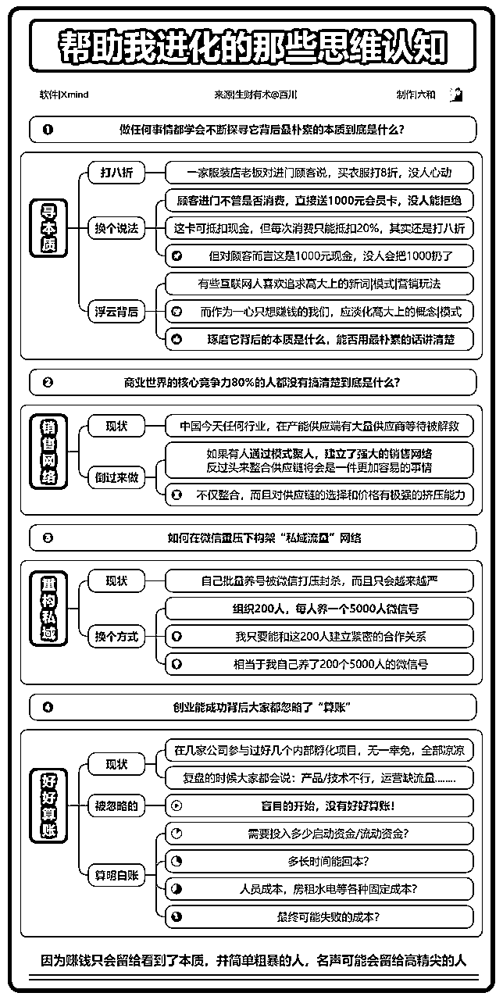

来源：https://dakhb269es.feishu.cn/docx/YWNxdt1z1oY0V3xXFJtcbgLqnPg
大家好，我是罗卜。
一个在生财喜欢用图分享的圈友，被称为生财最懂竖屏思维导图的男人，前前后后在生财也分享了400多张，也凭竖屏思维导图获得大佬们的青睐，也因竖屏思维导图破圈，担任2期思维导图特训教练，因此也加入生财航海家。
这次带着11个小伙伴一起共创了这份生财思维课的竖屏思维导图，期望可以尽一点点力，让看到的圈友有一点点帮助。
一图玩转生财有术这份也是新圈友必看，在下面这份文档也有更新版。
前段时间分享了【新老圈友不容错过的16张竖屏思维导图，让你在生财更上一层楼】，这份是对很多还不是熟悉生财有术的圈友，给了一些入门了解的导图，通过导图更好的使用生财有术。
那今天这份导图合集，全部内容来自【生财思维课】相关的导图，看过生财思维课的小伙伴都知道，在分享的最下方，都会推荐3篇精华帖，我们把后面的3篇导图做做了一份思维导图，可能内容会与原文有出入，所以在导图上方也附上了精华帖链接，方便随时查看原贴。
当生财推出【生财思维课】的时候，就有这样的一个想法，把涉及的精华帖都做一遍思维导图，就在社群邀请了一些小伙伴，让大家一起共创这份【生财思维课】导图合集。
我知道我一个人也是可以独立完成，这样可能效率会更快一些，但是我想把这个共创的机会与其他小伙伴分享，请先允许我介绍下本次制作的成员：
生财思维课合集：金多数
12个思维导图分别由：小玉，钱男友，睿睿，符亮，大吉，阳光笑脸，小青年，嗡嗡嗡嗡，六和，薄荷，罗卜等共同制作。
当然还有其他小伙伴在制作过程中给了大家的鼓励，支持，还有建议，才能让这份导图合集，在今天与大家相见。
同时也要感谢生财思维课的所有背后的工作人员，编写人员，最要感谢的是这些精华帖的创作者，是他们把自己的经验总结分享在生财，才能让更多圈友看到，学习等。
以下是部分小伙伴在社群日常做图分享，及应用费曼学习法互相点评。
我一直记得在生财，做好这3个关键，很不容易：真诚，利他，分享。
想要更好的了解竖屏思维导图可以看下这份《公开制作竖屏思维导图3个月后，应邀开办训练营》
让我在制作导图和分享的过程中的，深刻体会，你的真诚分享是可以感受到的；你的导图是可以帮助更多小伙伴快速阅读及随时回顾反馈；当你把导图分享出去的时候，让更多人看见，其实就已经把“真诚，利他，分享”完成了。
回顾下，其实最终还是利己，为什么这么说？
每制作一张竖屏思维导图，正常来说要看3遍以上，第一遍，把每句的关键点，核心内容提炼出来；第二遍，在导图排版布局的时候，再一次简化文字；第3遍，在导出分享在社群，互相点评时，再一次优化及修改细节。
同时也在制作的同时，锻炼了写作，思考，逻辑，文字排版，色彩搭配，对项目的了解等能力。
写作：看了这么多精华帖，对精华帖的写作有了基本的了解，自己也可以在这些帖子中学习写精华帖的框架以及一篇精华帖需要具备哪些内容等。
思考：经常看到一大段文字，脑海里会想，这段文字能不能用这个词概括，是从文字中找，还是另外用词概括，这些内容在前面制作的导图有没有出现过，等等。
逻辑：当做第一份精华帖的时候，可能还没有什么感觉，当做到第3张，第6张，就越来越熟练，同时也让自己在这些帖子中找到一些规律，也让自己在这些帖子找到之前未曾想过的，甚至在这些帖子中潜移默化的让自己的思维也开始发生变化；在框架中为什么是这么排布，在增加案例时为什么要用这个来解释，为了让普通圈友也能看懂，是不是可以用更直白的语言等。
文字排版：一份好看的导图，要遵守一句一主题，就是一个主题尽量只表达一句话的意思，让每个主题都有他的用意；另外什么地方需要用黑体加粗，什么地方需要增加颜色突出，什么时候需要用居中，文字的大小优势怎样排列，依次从大到小，有层次感。
色彩搭配：这里就很固定，同时用统一的生财色，就是这个色与生财系列展示大致相似，在制作过程中也让大家多尝试其他色彩搭配，不要被一个色系固化，也不要限制自己的思维，可以用邻近色，互补色等。
对项目的了解：这里要重点说下，就是每个小伙伴在选择制作的时候，优先考虑与自己当下或未来相关的精华帖，这样在制作的过程中，不仅制作了导图，还把项目的基本信息和细节也在制作时了解并学会，甚至应用在工作和生活中，如果还想了解更多项目相关，那么与找出更多与项目相关的帖子去制作，也是为了更好的去了解这个项目，多角度，看不同的帖子，多了解不同的玩法等。
当然还有更多其他的能力，这里就不一一列举，让导图成为自己的一种技能，一种可以让自己被看见的技能。
结合精华帖一起，当你看完精华帖还觉得有点不太理解，可以再把导图过一遍。


合集：


合集：



最后，请各位圈友记住以下这些制作竖屏思维导图创作者，除了罗卜，生财也慢慢出现许多其他优秀的小伙伴，如果有竖屏思维导图，资料整理等方面的咨询和合作，链接，请各位大佬们帮忙。
生财思维课合集创作成员：金多数，小玉，钱男友，睿睿，符亮，大吉，阳光笑脸，小青年，嗡嗡嗡嗡，六和，薄荷等。
再给大家透露一个，目前依然正在创作更多优秀精华帖竖屏思维导图，前面是17张，这次是37张，下一次或许是107张，让我们一起期待吧。
我是罗卜，生财最懂竖屏思维导图的男人。